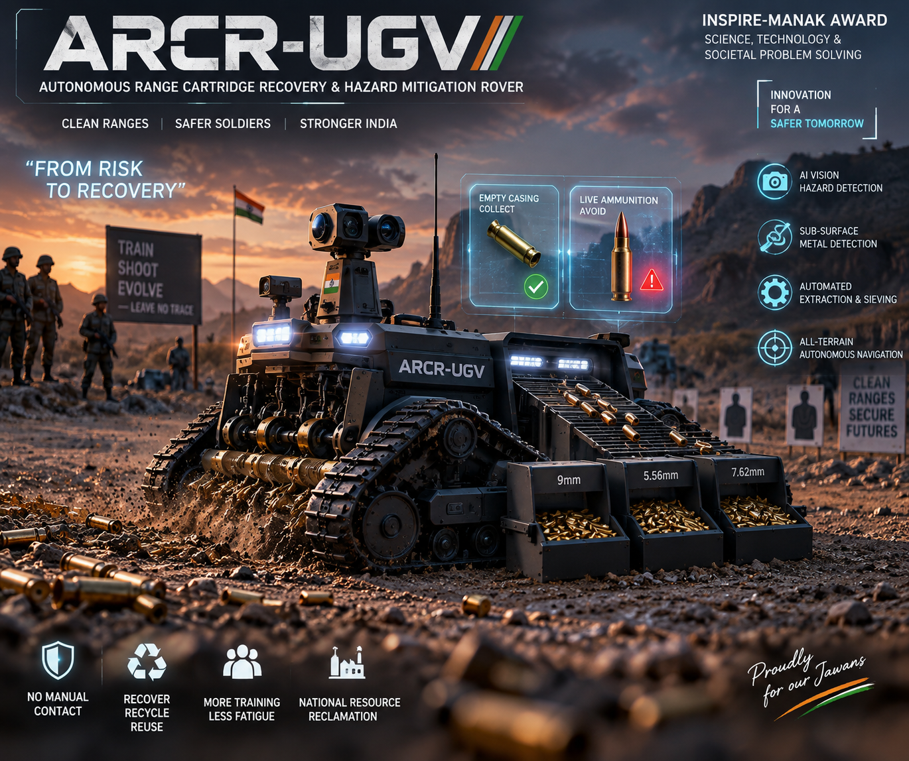

★ INSPIRE-MANAK NOMINATED INNOVATION
ARCR-UGV
Autonomous Range Cartridge Retriever — Tracked UGV
Designed to solve critical military and shooting range bottlenecks. After firing drills, thousands of high-value brass casings (9mm, 5.56mm, 7.62mm) litter hot grounds, presenting both extreme manual labor costs and dangerous hazards from unexploded rounds. ARCR-UGV traverses rugged terrains, scoops spent cartridges, separates debris through a calibrated mechanical rotary trommel, and uses edge AI to safely flag live ammunition and UXO hazards before chambering.
Mobility: High-torque tracked tank chassis with heavy mud treads
Sorting Drum: 3-stage calibrated rotary spiral trommel sieve
Sensor Coil: Sub-surface pulsed induction metal detector
Hazard AI: Edge vision classifier distinguishing spent brass from live UXO